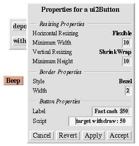

Making the fast cash button:

Making the çbalance© display:

Next, we'd like a "Fast cash" button that withdraws a set amount, say $50.
We take a button from the factory, and program it to do what we want.
First, we use the right-button menu to get a property sheet for the button. Using this, we edit the label to be appropriate, and then write a script for the button. The script looks like this:
target withdraw: 50Placing the button on the bank account, we set the target as before, and then test the button.
Next we drop the button into the bank account user interface.
Another useful thing would be to see the balance. One way we could do this is to take the string displaying the balance out of the object itself, but this is not a good idea, as the updating of the string is tied to the presence of the object in the world.
Better is to build an updating label. We could modify one from the factory, but for the purposes of exposition we'll do it the long way.
First we make a new label by evaluating updatingLabelMorph copy. This shows the object. To get the morph representation, use `Show Morph' from the object's middle-button menu. Positioning the label over the bank account we can set its target, and then set the expression that it uses to obtain its result. The following expression does the trick: balance printString. The expression is evaluated in the context of the target.
Next, we assemble a row containing a balance label (obtained from the factory; send it label: 'balance' to set the label), a spacer (copy one from the existing widget) and the balance updating label, and drop these into our UI object.